9decks
3reels
∞alma
soulbeats
Story decks · con alma
Narrador on-model. Componentes, animación y vídeo generados por el sistema, con el alma intacta. Cada deck pasa un gate PASS 10/10.
🔗 la ontología como puente · la escalera de la IA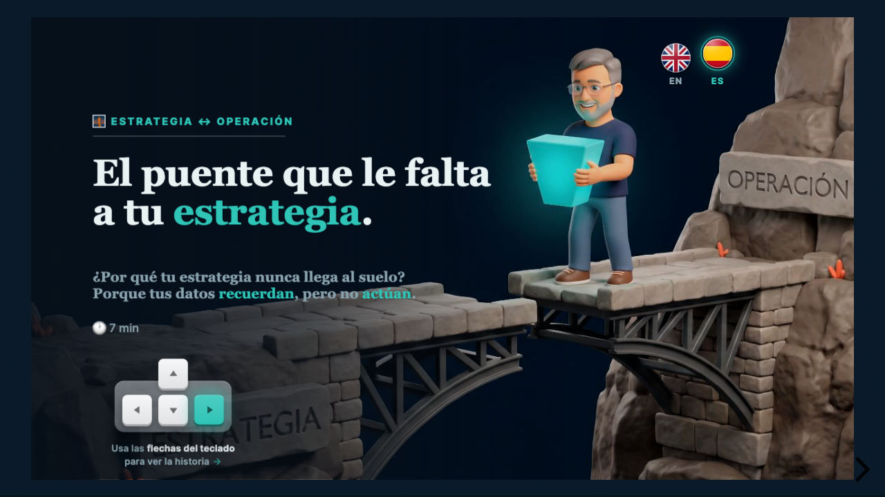
puente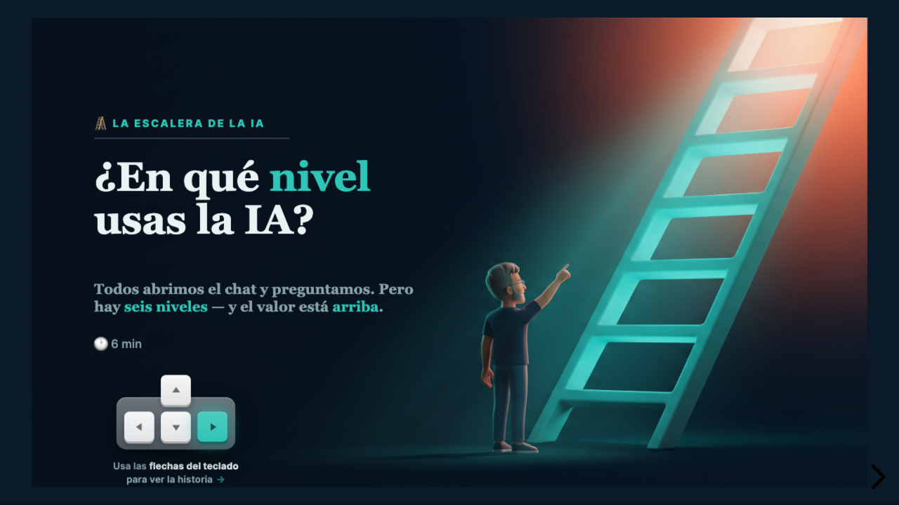
escalera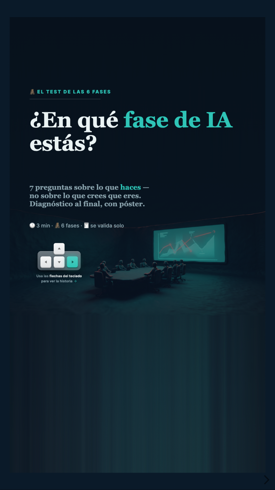
el test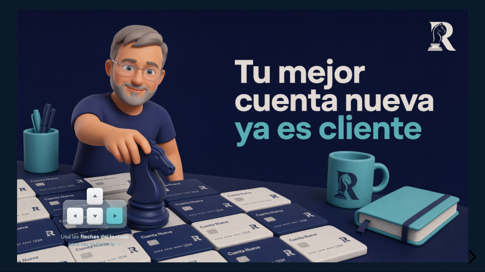
Tu mejor cuenta nueva ya es clienteEstrategia · SRM by anlak 👑 fábula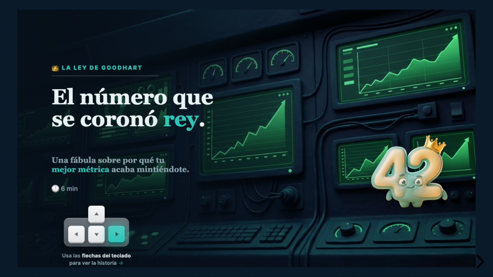
El número que se coronó reyFábula · la Ley de Goodhart 9:16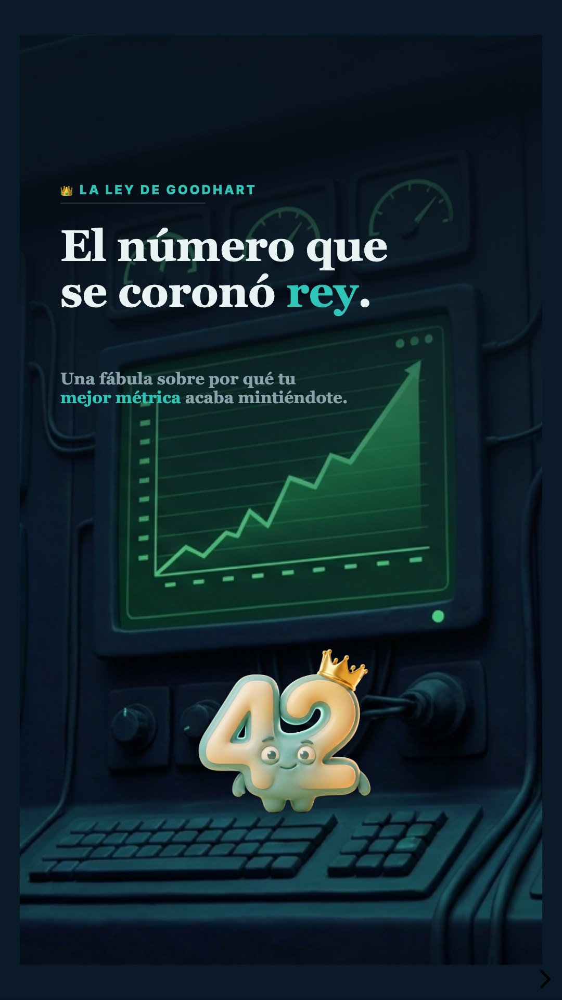
El número que se coronó reyMóvil · swipe EN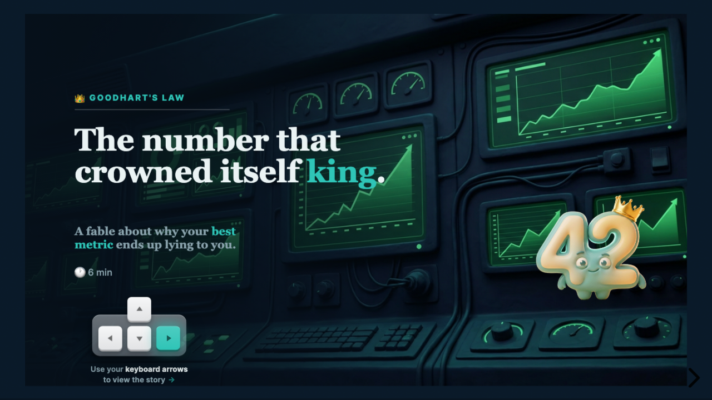
The number that crowned itself kingGoodhart's Law · in English 16:9 La ontología como puenteDeck · leer · ← → 16:9 La escalera de la IADeck · leer · ← → 🧪 test ¿En qué fase estás?Test · interactivo 9:16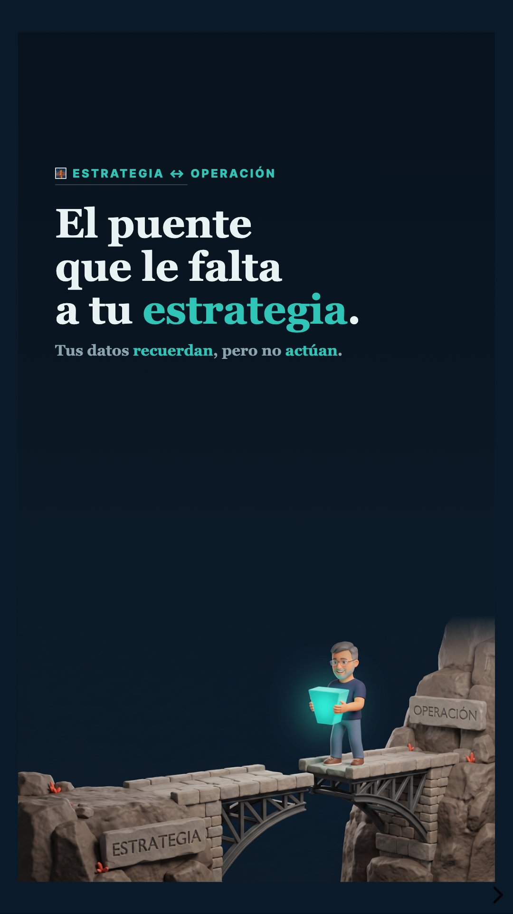
El puente, en móvilSwipe · vertical 9:16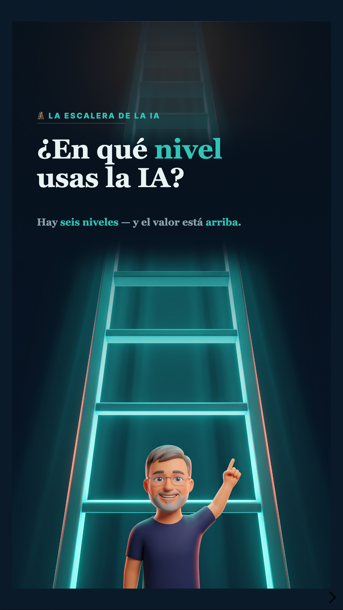
La escalera, en móvilSwipe · vertical EN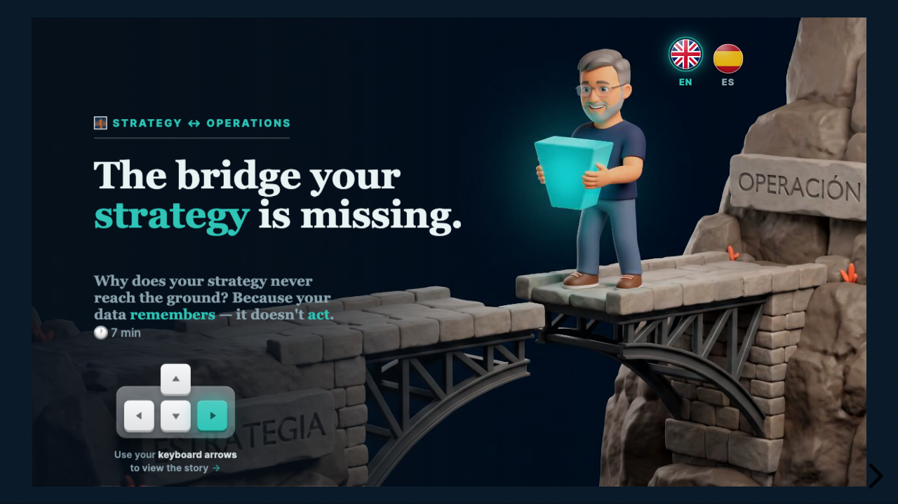
The bridge — in EnglishDeck · read · ← →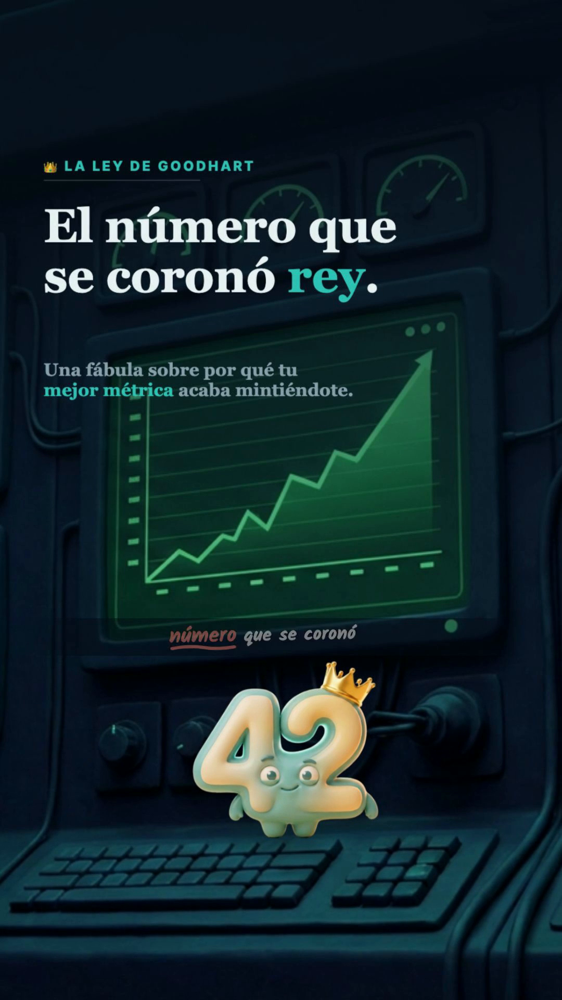
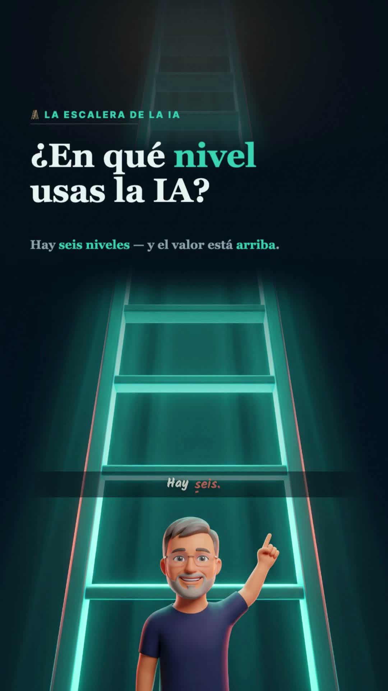